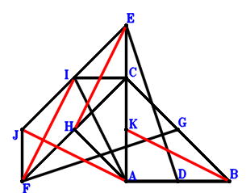
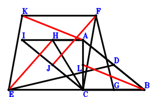
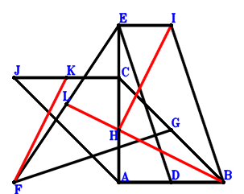
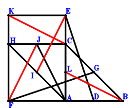
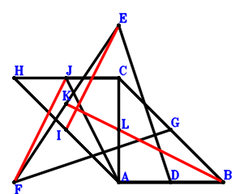
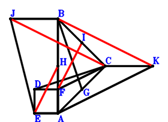
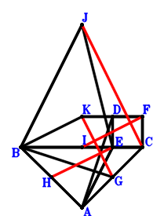
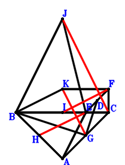
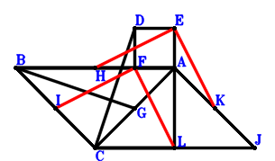

Exercise 402： Let EJFC be a parallelogram. CHAB is a trapezoid with CB//HA and CB=2HA. IABC is a trapezoid with AB//IC and AB=2IC. D, G, K are the midpoints of AB, CB, CA, respectively. ED⊥FG. Given that HE//FI and JA//KB, prove that \(FI·HE=JA·KB\).

\(\because \) D is the midpoint of AB \(\therefore \small\overrightarrow{AD}=\dfrac{\small\overrightarrow{AB}}{2}\).\(\because \) G is the midpoint of CB \(\therefore \small\overrightarrow{AG}=\dfrac{\small\overrightarrow{AB}}{2} + \dfrac{\small\overrightarrow{AC}}{2}\).\(\because \) CB//HA and CB=2HA \(\therefore \small\overrightarrow{AH}=- \dfrac{\small\overrightarrow{AB}}{2} + \dfrac{\small\overrightarrow{AC}}{2}\).\(\because \) AB//IC and AB=2IC \(\therefore \small\overrightarrow{AI}=- \dfrac{\small\overrightarrow{AB}}{2} + \small\overrightarrow{AC}\).\(\because \) EJFC is a parallelogram \(\therefore \small\overrightarrow{AJ}=- \small\overrightarrow{AC} + \small\overrightarrow{AE} + \small\overrightarrow{AF}\).\(\because \) K is the midpoint of CA \(\therefore \small\overrightarrow{AK}=\dfrac{\small\overrightarrow{AC}}{2}\).\(\because \) ED⊥FG \( \therefore\small\overrightarrow{ED} \cdot \small\overrightarrow{FG}=\left(\small\overrightarrow{AD} - \small\overrightarrow{AE}\right) \cdot \left(- \small\overrightarrow{AF} + \small\overrightarrow{AG}\right)=\left(\dfrac{\small\overrightarrow{AB}}{2} - \small\overrightarrow{AE}\right) \cdot \left(\dfrac{\small\overrightarrow{AB}}{2} + \dfrac{\small\overrightarrow{AC}}{2} - \small\overrightarrow{AF}\right)=\dfrac{\small\overrightarrow{AB}^{2}}{4} + \dfrac{\small\overrightarrow{AB} \cdot \small\overrightarrow{AC}}{4} - \dfrac{\small\overrightarrow{AB} \cdot \small\overrightarrow{AE}}{2} - \dfrac{\small\overrightarrow{AB} \cdot \small\overrightarrow{AF}}{2} - \dfrac{\small\overrightarrow{AC} \cdot \small\overrightarrow{AE}}{2} + \small\overrightarrow{AE} \cdot \small\overrightarrow{AF}=0.\)In conclusion, \(\small\overrightarrow{HE} \cdot \small\overrightarrow{IF} + \small\overrightarrow{JA} \cdot \small\overrightarrow{KB}=- \small\overrightarrow{AJ} \cdot \left(\small\overrightarrow{AB} - \small\overrightarrow{AK}\right) + \left(\small\overrightarrow{AE} - \small\overrightarrow{AH}\right) \cdot \left(\small\overrightarrow{AF} - \small\overrightarrow{AI}\right)=- \left(\small\overrightarrow{AB} - \dfrac{\small\overrightarrow{AC}}{2}\right) \cdot \left(- \small\overrightarrow{AC} + \small\overrightarrow{AE} + \small\overrightarrow{AF}\right) + \left(\dfrac{\small\overrightarrow{AB}}{2} - \small\overrightarrow{AC} + \small\overrightarrow{AF}\right) \cdot \left(\dfrac{\small\overrightarrow{AB}}{2} - \dfrac{\small\overrightarrow{AC}}{2} + \small\overrightarrow{AE}\right)=\dfrac{\small\overrightarrow{AB}^{2}}{4} + \dfrac{\small\overrightarrow{AB} \cdot \small\overrightarrow{AC}}{4} - \dfrac{\small\overrightarrow{AB} \cdot \small\overrightarrow{AE}}{2} - \dfrac{\small\overrightarrow{AB} \cdot \small\overrightarrow{AF}}{2} - \dfrac{\small\overrightarrow{AC} \cdot \small\overrightarrow{AE}}{2} + \small\overrightarrow{AE} \cdot \small\overrightarrow{AF}=0\)\(\because\) HE//FI and JA//KB \(\therefore\) \(FI·HE=JA·KB\).
Exercise 423： Let KECF and ICBA be parallelograms. HCBA is a trapezoid with CB//HA and CB=2HA. D, L, J, G are the midpoints of AB, AC, IC, CB, respectively. ED⊥FG. Given that EH//JF and KA//LB, prove that \(EH·JF=KA·LB\).

\(\because \) D is the midpoint of AB \(\therefore \small\overrightarrow{CD}=\dfrac{\small\overrightarrow{CA}}{2} + \dfrac{\small\overrightarrow{CB}}{2}\).\(\because \) G is the midpoint of CB \(\therefore \small\overrightarrow{CG}=\dfrac{\small\overrightarrow{CB}}{2}\).\(\because \) CB//HA and CB=2HA \(\therefore \small\overrightarrow{CH}=\small\overrightarrow{CA} - \dfrac{\small\overrightarrow{CB}}{2}\).\(\because \) ICBA is a parallelogram \(\therefore \small\overrightarrow{CI}=\small\overrightarrow{CA} - \small\overrightarrow{CB}\).\(\because \) J is the midpoint of IC \(\therefore \small\overrightarrow{CJ}=\dfrac{\small\overrightarrow{CI}}{2}=\dfrac{\small\overrightarrow{CA}}{2} - \dfrac{\small\overrightarrow{CB}}{2}\).\(\because \) KECF is a parallelogram \(\therefore \small\overrightarrow{CK}=\small\overrightarrow{CE} + \small\overrightarrow{CF}\).\(\because \) L is the midpoint of AC \(\therefore \small\overrightarrow{CL}=\dfrac{\small\overrightarrow{CA}}{2}\).\(\because \) ED⊥FG \( \therefore\small\overrightarrow{ED} \cdot \small\overrightarrow{FG}=\left(\small\overrightarrow{CD} - \small\overrightarrow{CE}\right) \cdot \left(- \small\overrightarrow{CF} + \small\overrightarrow{CG}\right)=\left(\dfrac{\small\overrightarrow{CB}}{2} - \small\overrightarrow{CF}\right) \cdot \left(\dfrac{\small\overrightarrow{CA}}{2} + \dfrac{\small\overrightarrow{CB}}{2} - \small\overrightarrow{CE}\right)=\dfrac{\small\overrightarrow{CA} \cdot \small\overrightarrow{CB}}{4} - \dfrac{\small\overrightarrow{CA} \cdot \small\overrightarrow{CF}}{2} + \dfrac{\small\overrightarrow{CB}^{2}}{4} - \dfrac{\small\overrightarrow{CB} \cdot \small\overrightarrow{CE}}{2} - \dfrac{\small\overrightarrow{CB} \cdot \small\overrightarrow{CF}}{2} + \small\overrightarrow{CE} \cdot \small\overrightarrow{CF}=0.\)In conclusion, \(\small\overrightarrow{HE} \cdot \small\overrightarrow{JF} + \small\overrightarrow{KA} \cdot \small\overrightarrow{LB}=\left(\small\overrightarrow{CA} - \small\overrightarrow{CK}\right) \cdot \left(\small\overrightarrow{CB} - \small\overrightarrow{CL}\right) + \left(\small\overrightarrow{CE} - \small\overrightarrow{CH}\right) \cdot \left(\small\overrightarrow{CF} - \small\overrightarrow{CJ}\right)=\left(- \dfrac{\small\overrightarrow{CA}}{2} + \small\overrightarrow{CB}\right) \cdot \left(\small\overrightarrow{CA} - \small\overrightarrow{CE} - \small\overrightarrow{CF}\right) + \left(- \small\overrightarrow{CA} + \dfrac{\small\overrightarrow{CB}}{2} + \small\overrightarrow{CE}\right) \cdot \left(- \dfrac{\small\overrightarrow{CA}}{2} + \dfrac{\small\overrightarrow{CB}}{2} + \small\overrightarrow{CF}\right)=\dfrac{\small\overrightarrow{CA} \cdot \small\overrightarrow{CB}}{4} - \dfrac{\small\overrightarrow{CA} \cdot \small\overrightarrow{CF}}{2} + \dfrac{\small\overrightarrow{CB}^{2}}{4} - \dfrac{\small\overrightarrow{CB} \cdot \small\overrightarrow{CE}}{2} - \dfrac{\small\overrightarrow{CB} \cdot \small\overrightarrow{CF}}{2} + \small\overrightarrow{CE} \cdot \small\overrightarrow{CF}=0\)\(\because\) EH//JF and KA//LB \(\therefore\) \(EH·JF=KA·LB\).
Exercise 522： Let JABC be a parallelogram. EABI is a trapezoid with AB//EI and AB=2EI. D, L, G, H, K are the midpoints of AB, FE, CB, CA, JC, respectively. ED⊥FG. Given that L, H, B are collinear and HI//FK, prove that \(FK·HI=2·HB·LH\).

\(\because \) D is the midpoint of AB \(\therefore \small\overrightarrow{AD}=\dfrac{\small\overrightarrow{AB}}{2}\).\(\because \) G is the midpoint of CB \(\therefore \small\overrightarrow{AG}=\dfrac{\small\overrightarrow{AB}}{2} + \dfrac{\small\overrightarrow{AC}}{2}\).\(\because \) H is the midpoint of CA \(\therefore \small\overrightarrow{AH}=\dfrac{\small\overrightarrow{AC}}{2}\).\(\because \) AB//EI and AB=2EI \(\therefore \small\overrightarrow{AI}=\dfrac{\small\overrightarrow{AB}}{2} + \small\overrightarrow{AE}\).\(\because \) JABC is a parallelogram \(\therefore \small\overrightarrow{AJ}=- \small\overrightarrow{AB} + \small\overrightarrow{AC}\).\(\because \) K is the midpoint of JC \(\therefore \small\overrightarrow{AK}=\dfrac{\small\overrightarrow{AC}}{2} + \dfrac{\small\overrightarrow{AJ}}{2}=- \dfrac{\small\overrightarrow{AB}}{2} + \small\overrightarrow{AC}\).\(\because \) L is the midpoint of FE \(\therefore \small\overrightarrow{AL}=\dfrac{\small\overrightarrow{AE}}{2} + \dfrac{\small\overrightarrow{AF}}{2}\).\(\because \) ED⊥FG \( \therefore\small\overrightarrow{ED} \cdot \small\overrightarrow{FG}=\left(\small\overrightarrow{AD} - \small\overrightarrow{AE}\right) \cdot \left(- \small\overrightarrow{AF} + \small\overrightarrow{AG}\right)=\left(\dfrac{\small\overrightarrow{AB}}{2} - \small\overrightarrow{AE}\right) \cdot \left(\dfrac{\small\overrightarrow{AB}}{2} + \dfrac{\small\overrightarrow{AC}}{2} - \small\overrightarrow{AF}\right)=\dfrac{\small\overrightarrow{AB}^{2}}{4} + \dfrac{\small\overrightarrow{AB} \cdot \small\overrightarrow{AC}}{4} - \dfrac{\small\overrightarrow{AB} \cdot \small\overrightarrow{AE}}{2} - \dfrac{\small\overrightarrow{AB} \cdot \small\overrightarrow{AF}}{2} - \dfrac{\small\overrightarrow{AC} \cdot \small\overrightarrow{AE}}{2} + \small\overrightarrow{AE} \cdot \small\overrightarrow{AF}=0.\)In conclusion, \(2 \small\overrightarrow{HB} \cdot \small\overrightarrow{LH} + \small\overrightarrow{HI} \cdot \small\overrightarrow{KF}=2 \left(\small\overrightarrow{AB} - \small\overrightarrow{AH}\right) \cdot \left(\small\overrightarrow{AH} - \small\overrightarrow{AL}\right) + \left(\small\overrightarrow{AF} - \small\overrightarrow{AK}\right) \cdot \left(- \small\overrightarrow{AH} + \small\overrightarrow{AI}\right)=2 \left(\small\overrightarrow{AB} - \dfrac{\small\overrightarrow{AC}}{2}\right) \cdot \left(\dfrac{\small\overrightarrow{AC}}{2} - \dfrac{\small\overrightarrow{AE}}{2} - \dfrac{\small\overrightarrow{AF}}{2}\right) + \left(\dfrac{\small\overrightarrow{AB}}{2} - \small\overrightarrow{AC} + \small\overrightarrow{AF}\right) \cdot \left(\dfrac{\small\overrightarrow{AB}}{2} - \dfrac{\small\overrightarrow{AC}}{2} + \small\overrightarrow{AE}\right)=\dfrac{\small\overrightarrow{AB}^{2}}{4} + \dfrac{\small\overrightarrow{AB} \cdot \small\overrightarrow{AC}}{4} - \dfrac{\small\overrightarrow{AB} \cdot \small\overrightarrow{AE}}{2} - \dfrac{\small\overrightarrow{AB} \cdot \small\overrightarrow{AF}}{2} - \dfrac{\small\overrightarrow{AC} \cdot \small\overrightarrow{AE}}{2} + \small\overrightarrow{AE} \cdot \small\overrightarrow{AF}=0\)\(\because\) L, H, B are collinear and HI//FK \(\therefore\) \(FK·HI=2·HB·LH\).
Exercise 551： Let HABC and KFAE be parallelograms. JABC is a trapezoid with AB//JC and AB=2JC. D, L, G, I are the midpoints of AB, CA, CB, HA, respectively. ED⊥FG. Given that IE//FJ and KC//LB, prove that \(FJ·IE=KC·LB\).

\(\because \) D is the midpoint of AB \(\therefore \small\overrightarrow{AD}=\dfrac{\small\overrightarrow{AB}}{2}\).\(\because \) G is the midpoint of CB \(\therefore \small\overrightarrow{AG}=\dfrac{\small\overrightarrow{AB}}{2} + \dfrac{\small\overrightarrow{AC}}{2}\).\(\because \) HABC is a parallelogram \(\therefore \small\overrightarrow{AH}=- \small\overrightarrow{AB} + \small\overrightarrow{AC}\).\(\because \) I is the midpoint of HA \(\therefore \small\overrightarrow{AI}=\dfrac{\small\overrightarrow{AH}}{2}=- \dfrac{\small\overrightarrow{AB}}{2} + \dfrac{\small\overrightarrow{AC}}{2}\).\(\because \) AB//JC and AB=2JC \(\therefore \small\overrightarrow{AJ}=- \dfrac{\small\overrightarrow{AB}}{2} + \small\overrightarrow{AC}\).\(\because \) KFAE is a parallelogram \(\therefore \small\overrightarrow{AK}=\small\overrightarrow{AE} + \small\overrightarrow{AF}\).\(\because \) L is the midpoint of CA \(\therefore \small\overrightarrow{AL}=\dfrac{\small\overrightarrow{AC}}{2}\).\(\because \) ED⊥FG \( \therefore\small\overrightarrow{ED} \cdot \small\overrightarrow{FG}=\left(\small\overrightarrow{AD} - \small\overrightarrow{AE}\right) \cdot \left(- \small\overrightarrow{AF} + \small\overrightarrow{AG}\right)=\left(\dfrac{\small\overrightarrow{AB}}{2} - \small\overrightarrow{AE}\right) \cdot \left(\dfrac{\small\overrightarrow{AB}}{2} + \dfrac{\small\overrightarrow{AC}}{2} - \small\overrightarrow{AF}\right)=\dfrac{\small\overrightarrow{AB}^{2}}{4} + \dfrac{\small\overrightarrow{AB} \cdot \small\overrightarrow{AC}}{4} - \dfrac{\small\overrightarrow{AB} \cdot \small\overrightarrow{AE}}{2} - \dfrac{\small\overrightarrow{AB} \cdot \small\overrightarrow{AF}}{2} - \dfrac{\small\overrightarrow{AC} \cdot \small\overrightarrow{AE}}{2} + \small\overrightarrow{AE} \cdot \small\overrightarrow{AF}=0.\)In conclusion, \(\small\overrightarrow{IE} \cdot \small\overrightarrow{JF} + \small\overrightarrow{KC} \cdot \small\overrightarrow{LB}=\left(\small\overrightarrow{AB} - \small\overrightarrow{AL}\right) \cdot \left(\small\overrightarrow{AC} - \small\overrightarrow{AK}\right) + \left(\small\overrightarrow{AE} - \small\overrightarrow{AI}\right) \cdot \left(\small\overrightarrow{AF} - \small\overrightarrow{AJ}\right)=\left(\small\overrightarrow{AB} - \dfrac{\small\overrightarrow{AC}}{2}\right) \cdot \left(\small\overrightarrow{AC} - \small\overrightarrow{AE} - \small\overrightarrow{AF}\right) + \left(\dfrac{\small\overrightarrow{AB}}{2} - \small\overrightarrow{AC} + \small\overrightarrow{AF}\right) \cdot \left(\dfrac{\small\overrightarrow{AB}}{2} - \dfrac{\small\overrightarrow{AC}}{2} + \small\overrightarrow{AE}\right)=\dfrac{\small\overrightarrow{AB}^{2}}{4} + \dfrac{\small\overrightarrow{AB} \cdot \small\overrightarrow{AC}}{4} - \dfrac{\small\overrightarrow{AB} \cdot \small\overrightarrow{AE}}{2} - \dfrac{\small\overrightarrow{AB} \cdot \small\overrightarrow{AF}}{2} - \dfrac{\small\overrightarrow{AC} \cdot \small\overrightarrow{AE}}{2} + \small\overrightarrow{AE} \cdot \small\overrightarrow{AF}=0\)\(\because\) IE//FJ and KC//LB \(\therefore\) \(FJ·IE=KC·LB\).
Exercise 554： Let HABC be a parallelogram. JABC is a trapezoid with AB//JC and AB=2JC. D, K, L, G, I are the midpoints of AB, FE, CA, CB, HA, respectively. ED⊥FG. Given that K, L, B are collinear and IE//FJ, prove that \(FJ·IE=2·KL·LB\).

\(\because \) D is the midpoint of AB \(\therefore \small\overrightarrow{AD}=\dfrac{\small\overrightarrow{AB}}{2}\).\(\because \) G is the midpoint of CB \(\therefore \small\overrightarrow{AG}=\dfrac{\small\overrightarrow{AB}}{2} + \dfrac{\small\overrightarrow{AC}}{2}\).\(\because \) HABC is a parallelogram \(\therefore \small\overrightarrow{AH}=- \small\overrightarrow{AB} + \small\overrightarrow{AC}\).\(\because \) I is the midpoint of HA \(\therefore \small\overrightarrow{AI}=\dfrac{\small\overrightarrow{AH}}{2}=- \dfrac{\small\overrightarrow{AB}}{2} + \dfrac{\small\overrightarrow{AC}}{2}\).\(\because \) AB//JC and AB=2JC \(\therefore \small\overrightarrow{AJ}=- \dfrac{\small\overrightarrow{AB}}{2} + \small\overrightarrow{AC}\).\(\because \) K is the midpoint of FE \(\therefore \small\overrightarrow{AK}=\dfrac{\small\overrightarrow{AE}}{2} + \dfrac{\small\overrightarrow{AF}}{2}\).\(\because \) L is the midpoint of CA \(\therefore \small\overrightarrow{AL}=\dfrac{\small\overrightarrow{AC}}{2}\).\(\because \) ED⊥FG \( \therefore\small\overrightarrow{ED} \cdot \small\overrightarrow{FG}=\left(\small\overrightarrow{AD} - \small\overrightarrow{AE}\right) \cdot \left(- \small\overrightarrow{AF} + \small\overrightarrow{AG}\right)=\left(\dfrac{\small\overrightarrow{AB}}{2} - \small\overrightarrow{AE}\right) \cdot \left(\dfrac{\small\overrightarrow{AB}}{2} + \dfrac{\small\overrightarrow{AC}}{2} - \small\overrightarrow{AF}\right)=\dfrac{\small\overrightarrow{AB}^{2}}{4} + \dfrac{\small\overrightarrow{AB} \cdot \small\overrightarrow{AC}}{4} - \dfrac{\small\overrightarrow{AB} \cdot \small\overrightarrow{AE}}{2} - \dfrac{\small\overrightarrow{AB} \cdot \small\overrightarrow{AF}}{2} - \dfrac{\small\overrightarrow{AC} \cdot \small\overrightarrow{AE}}{2} + \small\overrightarrow{AE} \cdot \small\overrightarrow{AF}=0.\)In conclusion, \(\small\overrightarrow{IE} \cdot \small\overrightarrow{JF} + 2 \small\overrightarrow{KL} \cdot \small\overrightarrow{LB}=2 \left(\small\overrightarrow{AB} - \small\overrightarrow{AL}\right) \cdot \left(- \small\overrightarrow{AK} + \small\overrightarrow{AL}\right) + \left(\small\overrightarrow{AE} - \small\overrightarrow{AI}\right) \cdot \left(\small\overrightarrow{AF} - \small\overrightarrow{AJ}\right)=2 \left(\small\overrightarrow{AB} - \dfrac{\small\overrightarrow{AC}}{2}\right) \cdot \left(\dfrac{\small\overrightarrow{AC}}{2} - \dfrac{\small\overrightarrow{AE}}{2} - \dfrac{\small\overrightarrow{AF}}{2}\right) + \left(\dfrac{\small\overrightarrow{AB}}{2} - \small\overrightarrow{AC} + \small\overrightarrow{AF}\right) \cdot \left(\dfrac{\small\overrightarrow{AB}}{2} - \dfrac{\small\overrightarrow{AC}}{2} + \small\overrightarrow{AE}\right)=\dfrac{\small\overrightarrow{AB}^{2}}{4} + \dfrac{\small\overrightarrow{AB} \cdot \small\overrightarrow{AC}}{4} - \dfrac{\small\overrightarrow{AB} \cdot \small\overrightarrow{AE}}{2} - \dfrac{\small\overrightarrow{AB} \cdot \small\overrightarrow{AF}}{2} - \dfrac{\small\overrightarrow{AC} \cdot \small\overrightarrow{AE}}{2} + \small\overrightarrow{AE} \cdot \small\overrightarrow{AF}=0\)\(\because\) K, L, B are collinear and IE//FJ \(\therefore\) \(FJ·IE=2·KL·LB\).
Exercise 626： Let DEAF be a parallelogram. JEAB is a trapezoid with JB//EA and JB=2EA. CFAK is a trapezoid with AK//FC and AK=2FC. I, H, G are the midpoints of BC, BA, AC, respectively. DC⊥BG. Given that JC//BK and EH//FI, prove that \(BK·JC=4·EH·FI\).

\(\because \) DEAF is a parallelogram \(\therefore \small\overrightarrow{AD}=\small\overrightarrow{AE} + \small\overrightarrow{AF}\).\(\because \) G is the midpoint of AC \(\therefore \small\overrightarrow{AG}=\dfrac{\small\overrightarrow{AC}}{2}\).\(\because \) H is the midpoint of BA \(\therefore \small\overrightarrow{AH}=\dfrac{\small\overrightarrow{AB}}{2}\).\(\because \) I is the midpoint of BC \(\therefore \small\overrightarrow{AI}=\dfrac{\small\overrightarrow{AB}}{2} + \dfrac{\small\overrightarrow{AC}}{2}\).\(\because \) JB//EA and JB=2EA \(\therefore \small\overrightarrow{AJ}=\small\overrightarrow{AB} + 2 \small\overrightarrow{AE}\).\(\because \) AK//FC and AK=2FC \(\therefore \small\overrightarrow{AK}=2 \small\overrightarrow{AC} - 2 \small\overrightarrow{AF}\).\(\because \) DC⊥BG \( \therefore\small\overrightarrow{DC} \cdot \small\overrightarrow{GB}=\left(\small\overrightarrow{AB} - \small\overrightarrow{AG}\right) \cdot \left(\small\overrightarrow{AC} - \small\overrightarrow{AD}\right)=\left(\small\overrightarrow{AB} - \dfrac{\small\overrightarrow{AC}}{2}\right) \cdot \left(\small\overrightarrow{AC} - \small\overrightarrow{AE} - \small\overrightarrow{AF}\right)=\small\overrightarrow{AB} \cdot \small\overrightarrow{AC} - \small\overrightarrow{AB} \cdot \small\overrightarrow{AE} - \small\overrightarrow{AB} \cdot \small\overrightarrow{AF} - \dfrac{\small\overrightarrow{AC}^{2}}{2} + \dfrac{\small\overrightarrow{AC} \cdot \small\overrightarrow{AE}}{2} + \dfrac{\small\overrightarrow{AC} \cdot \small\overrightarrow{AF}}{2}=0.\)In conclusion, \(\small\overrightarrow{CJ} \cdot \small\overrightarrow{KB} - 4 \small\overrightarrow{EH} \cdot \small\overrightarrow{FI}=\left(\small\overrightarrow{AB} - \small\overrightarrow{AK}\right) \cdot \left(- \small\overrightarrow{AC} + \small\overrightarrow{AJ}\right) - 4 \left(- \small\overrightarrow{AE} + \small\overrightarrow{AH}\right) \cdot \left(- \small\overrightarrow{AF} + \small\overrightarrow{AI}\right)=- 4 \left(\dfrac{\small\overrightarrow{AB}}{2} - \small\overrightarrow{AE}\right) \cdot \left(\dfrac{\small\overrightarrow{AB}}{2} + \dfrac{\small\overrightarrow{AC}}{2} - \small\overrightarrow{AF}\right) + \left(\small\overrightarrow{AB} - 2 \small\overrightarrow{AC} + 2 \small\overrightarrow{AF}\right) \cdot \left(\small\overrightarrow{AB} - \small\overrightarrow{AC} + 2 \small\overrightarrow{AE}\right)=- 4 \small\overrightarrow{AB} \cdot \small\overrightarrow{AC} + 4 \small\overrightarrow{AB} \cdot \small\overrightarrow{AE} + 4 \small\overrightarrow{AB} \cdot \small\overrightarrow{AF} + 2 \small\overrightarrow{AC}^{2} - 2 \small\overrightarrow{AC} \cdot \small\overrightarrow{AE} - 2 \small\overrightarrow{AC} \cdot \small\overrightarrow{AF}=0\)\(\because\) JC//BK and EH//FI \(\therefore\) \(BK·JC=4·EH·FI\).
Exercise 730： Let DECF be a parallelogram. JBAE is a trapezoid with BJ//AE and BJ=2AE. KBCF is a trapezoid with BC//KF and BC=2KF. I, H, G are the midpoints of BC, BA, AC, respectively. AD⊥BG. Given that JC//KG and HE//IF, prove that \(JC·KG=2·HE·IF\).

\(\because \) DECF is a parallelogram \(\therefore \small\overrightarrow{CD}=\small\overrightarrow{CE} + \small\overrightarrow{CF}\).\(\because \) G is the midpoint of AC \(\therefore \small\overrightarrow{CG}=\dfrac{\small\overrightarrow{CA}}{2}\).\(\because \) H is the midpoint of BA \(\therefore \small\overrightarrow{CH}=\dfrac{\small\overrightarrow{CA}}{2} + \dfrac{\small\overrightarrow{CB}}{2}\).\(\because \) I is the midpoint of BC \(\therefore \small\overrightarrow{CI}=\dfrac{\small\overrightarrow{CB}}{2}\).\(\because \) BJ//AE and BJ=2AE \(\therefore \small\overrightarrow{CJ}=- 2 \small\overrightarrow{CA} + \small\overrightarrow{CB} + 2 \small\overrightarrow{CE}\).\(\because \) BC//KF and BC=2KF \(\therefore \small\overrightarrow{CK}=\dfrac{\small\overrightarrow{CB}}{2} + \small\overrightarrow{CF}\).\(\because \) AD⊥BG \( \therefore\small\overrightarrow{DA} \cdot \small\overrightarrow{GB}=\left(\small\overrightarrow{CA} - \small\overrightarrow{CD}\right) \cdot \left(\small\overrightarrow{CB} - \small\overrightarrow{CG}\right)=\left(- \dfrac{\small\overrightarrow{CA}}{2} + \small\overrightarrow{CB}\right) \cdot \left(\small\overrightarrow{CA} - \small\overrightarrow{CE} - \small\overrightarrow{CF}\right)=- \dfrac{\small\overrightarrow{CA}^{2}}{2} + \small\overrightarrow{CA} \cdot \small\overrightarrow{CB} + \dfrac{\small\overrightarrow{CA} \cdot \small\overrightarrow{CE}}{2} + \dfrac{\small\overrightarrow{CA} \cdot \small\overrightarrow{CF}}{2} - \small\overrightarrow{CB} \cdot \small\overrightarrow{CE} - \small\overrightarrow{CB} \cdot \small\overrightarrow{CF}=0.\)In conclusion, \(\small\overrightarrow{CJ} \cdot \small\overrightarrow{GK} - 2 \small\overrightarrow{EH} \cdot \small\overrightarrow{FI}=\small\overrightarrow{CJ} \cdot \left(- \small\overrightarrow{CG} + \small\overrightarrow{CK}\right) - 2 \left(- \small\overrightarrow{CE} + \small\overrightarrow{CH}\right) \cdot \left(- \small\overrightarrow{CF} + \small\overrightarrow{CI}\right)=- 2 \left(\dfrac{\small\overrightarrow{CB}}{2} - \small\overrightarrow{CF}\right) \cdot \left(\dfrac{\small\overrightarrow{CA}}{2} + \dfrac{\small\overrightarrow{CB}}{2} - \small\overrightarrow{CE}\right) + \left(- 2 \small\overrightarrow{CA} + \small\overrightarrow{CB} + 2 \small\overrightarrow{CE}\right) \cdot \left(- \dfrac{\small\overrightarrow{CA}}{2} + \dfrac{\small\overrightarrow{CB}}{2} + \small\overrightarrow{CF}\right)=\small\overrightarrow{CA}^{2} - 2 \small\overrightarrow{CA} \cdot \small\overrightarrow{CB} - \small\overrightarrow{CA} \cdot \small\overrightarrow{CE} - \small\overrightarrow{CA} \cdot \small\overrightarrow{CF} + 2 \small\overrightarrow{CB} \cdot \small\overrightarrow{CE} + 2 \small\overrightarrow{CB} \cdot \small\overrightarrow{CF}=0\)\(\because\) JC//KG and HE//IF \(\therefore\) \(JC·KG=2·HE·IF\).
Exercise 734： Let JBAE be a trapezoid with BJ//AE and BJ=2AE. KBCF is a trapezoid with BC//KF and BC=2KF. I, H, G, D are the midpoints of BC, BA, AC, EF, respectively. BG⊥GD. Given that JC//KG and HE//IF, prove that \(JC·KG=2·HE·IF\).

\(\because \) D is the midpoint of EF \(\therefore \small\overrightarrow{CD}=\dfrac{\small\overrightarrow{CE}}{2} + \dfrac{\small\overrightarrow{CF}}{2}\).\(\because \) G is the midpoint of AC \(\therefore \small\overrightarrow{CG}=\dfrac{\small\overrightarrow{CA}}{2}\).\(\because \) H is the midpoint of BA \(\therefore \small\overrightarrow{CH}=\dfrac{\small\overrightarrow{CA}}{2} + \dfrac{\small\overrightarrow{CB}}{2}\).\(\because \) I is the midpoint of BC \(\therefore \small\overrightarrow{CI}=\dfrac{\small\overrightarrow{CB}}{2}\).\(\because \) BJ//AE and BJ=2AE \(\therefore \small\overrightarrow{CJ}=- 2 \small\overrightarrow{CA} + \small\overrightarrow{CB} + 2 \small\overrightarrow{CE}\).\(\because \) BC//KF and BC=2KF \(\therefore \small\overrightarrow{CK}=\dfrac{\small\overrightarrow{CB}}{2} + \small\overrightarrow{CF}\).\(\because \) BG⊥GD \( \therefore\small\overrightarrow{DG} \cdot \small\overrightarrow{GB}=\left(\small\overrightarrow{CB} - \small\overrightarrow{CG}\right) \cdot \left(- \small\overrightarrow{CD} + \small\overrightarrow{CG}\right)=\left(- \dfrac{\small\overrightarrow{CA}}{2} + \small\overrightarrow{CB}\right) \cdot \left(\dfrac{\small\overrightarrow{CA}}{2} - \dfrac{\small\overrightarrow{CE}}{2} - \dfrac{\small\overrightarrow{CF}}{2}\right)=- \dfrac{\small\overrightarrow{CA}^{2}}{4} + \dfrac{\small\overrightarrow{CA} \cdot \small\overrightarrow{CB}}{2} + \dfrac{\small\overrightarrow{CA} \cdot \small\overrightarrow{CE}}{4} + \dfrac{\small\overrightarrow{CA} \cdot \small\overrightarrow{CF}}{4} - \dfrac{\small\overrightarrow{CB} \cdot \small\overrightarrow{CE}}{2} - \dfrac{\small\overrightarrow{CB} \cdot \small\overrightarrow{CF}}{2}=0.\)In conclusion, \(\small\overrightarrow{CJ} \cdot \small\overrightarrow{GK} - 2 \small\overrightarrow{EH} \cdot \small\overrightarrow{FI}=\small\overrightarrow{CJ} \cdot \left(- \small\overrightarrow{CG} + \small\overrightarrow{CK}\right) - 2 \left(- \small\overrightarrow{CE} + \small\overrightarrow{CH}\right) \cdot \left(- \small\overrightarrow{CF} + \small\overrightarrow{CI}\right)=- 2 \left(\dfrac{\small\overrightarrow{CB}}{2} - \small\overrightarrow{CF}\right) \cdot \left(\dfrac{\small\overrightarrow{CA}}{2} + \dfrac{\small\overrightarrow{CB}}{2} - \small\overrightarrow{CE}\right) + \left(- 2 \small\overrightarrow{CA} + \small\overrightarrow{CB} + 2 \small\overrightarrow{CE}\right) \cdot \left(- \dfrac{\small\overrightarrow{CA}}{2} + \dfrac{\small\overrightarrow{CB}}{2} + \small\overrightarrow{CF}\right)=\small\overrightarrow{CA}^{2} - 2 \small\overrightarrow{CA} \cdot \small\overrightarrow{CB} - \small\overrightarrow{CA} \cdot \small\overrightarrow{CE} - \small\overrightarrow{CA} \cdot \small\overrightarrow{CF} + 2 \small\overrightarrow{CB} \cdot \small\overrightarrow{CE} + 2 \small\overrightarrow{CB} \cdot \small\overrightarrow{CF}=0\)\(\because\) JC//KG and HE//IF \(\therefore\) \(JC·KG=2·HE·IF\).
Exercise 921： Let BCJA and DFAE be parallelograms. BCLA is a trapezoid with BA//CL and BA=2CL. I, H, G, K are the midpoints of BC, BA, CA, AJ, respectively. CD⊥BG. Given that HE//IF and EK//FL, prove that \(HE·IF=EK·FL\).

\(\because \) DFAE is a parallelogram \(\therefore \small\overrightarrow{AD}=\small\overrightarrow{AE} + \small\overrightarrow{AF}\).\(\because \) G is the midpoint of CA \(\therefore \small\overrightarrow{AG}=\dfrac{\small\overrightarrow{AC}}{2}\).\(\because \) H is the midpoint of BA \(\therefore \small\overrightarrow{AH}=\dfrac{\small\overrightarrow{AB}}{2}\).\(\because \) I is the midpoint of BC \(\therefore \small\overrightarrow{AI}=\dfrac{\small\overrightarrow{AB}}{2} + \dfrac{\small\overrightarrow{AC}}{2}\).\(\because \) BCJA is a parallelogram \(\therefore \small\overrightarrow{AJ}=- \small\overrightarrow{AB} + \small\overrightarrow{AC}\).\(\because \) K is the midpoint of AJ \(\therefore \small\overrightarrow{AK}=\dfrac{\small\overrightarrow{AJ}}{2}=- \dfrac{\small\overrightarrow{AB}}{2} + \dfrac{\small\overrightarrow{AC}}{2}\).\(\because \) BA//CL and BA=2CL \(\therefore \small\overrightarrow{AL}=- \dfrac{\small\overrightarrow{AB}}{2} + \small\overrightarrow{AC}\).\(\because \) CD⊥BG \( \therefore\small\overrightarrow{DC} \cdot \small\overrightarrow{GB}=\left(\small\overrightarrow{AB} - \small\overrightarrow{AG}\right) \cdot \left(\small\overrightarrow{AC} - \small\overrightarrow{AD}\right)=\left(\small\overrightarrow{AB} - \dfrac{\small\overrightarrow{AC}}{2}\right) \cdot \left(\small\overrightarrow{AC} - \small\overrightarrow{AE} - \small\overrightarrow{AF}\right)=\small\overrightarrow{AB} \cdot \small\overrightarrow{AC} - \small\overrightarrow{AB} \cdot \small\overrightarrow{AE} - \small\overrightarrow{AB} \cdot \small\overrightarrow{AF} - \dfrac{\small\overrightarrow{AC}^{2}}{2} + \dfrac{\small\overrightarrow{AC} \cdot \small\overrightarrow{AE}}{2} + \dfrac{\small\overrightarrow{AC} \cdot \small\overrightarrow{AF}}{2}=0.\)In conclusion, \(- \small\overrightarrow{EH} \cdot \small\overrightarrow{FI} + \small\overrightarrow{KE} \cdot \small\overrightarrow{LF}=- \left(- \small\overrightarrow{AE} + \small\overrightarrow{AH}\right) \cdot \left(- \small\overrightarrow{AF} + \small\overrightarrow{AI}\right) + \left(\small\overrightarrow{AE} - \small\overrightarrow{AK}\right) \cdot \left(\small\overrightarrow{AF} - \small\overrightarrow{AL}\right)=- \left(\dfrac{\small\overrightarrow{AB}}{2} - \small\overrightarrow{AE}\right) \cdot \left(\dfrac{\small\overrightarrow{AB}}{2} + \dfrac{\small\overrightarrow{AC}}{2} - \small\overrightarrow{AF}\right) + \left(\dfrac{\small\overrightarrow{AB}}{2} - \small\overrightarrow{AC} + \small\overrightarrow{AF}\right) \cdot \left(\dfrac{\small\overrightarrow{AB}}{2} - \dfrac{\small\overrightarrow{AC}}{2} + \small\overrightarrow{AE}\right)=- \small\overrightarrow{AB} \cdot \small\overrightarrow{AC} + \small\overrightarrow{AB} \cdot \small\overrightarrow{AE} + \small\overrightarrow{AB} \cdot \small\overrightarrow{AF} + \dfrac{\small\overrightarrow{AC}^{2}}{2} - \dfrac{\small\overrightarrow{AC} \cdot \small\overrightarrow{AE}}{2} - \dfrac{\small\overrightarrow{AC} \cdot \small\overrightarrow{AF}}{2}=0\)\(\because\) HE//IF and EK//FL \(\therefore\) \(HE·IF=EK·FL\).